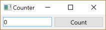
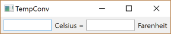
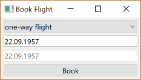
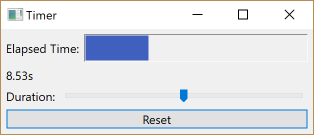
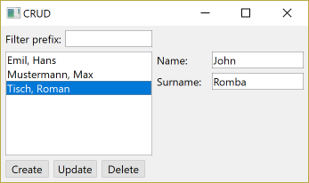
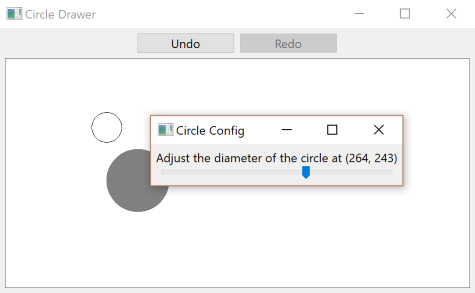
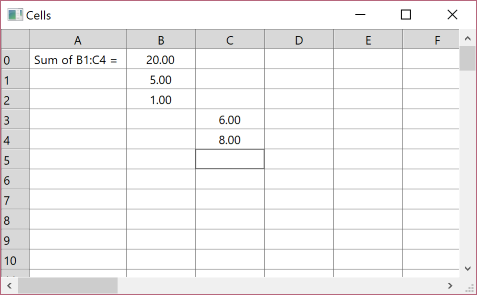

[in Lua] counter.lua
[in Lua] counter.lua The 7GUIs is a set of 7 tasks to be implemented using a GUI proposed by Eugen Kiss in his master's thesis as a way to evaluate GUI toolkits. By implementing those 7 task one should be able to compare different GUIs in any language with a similar comparison base. See his web site for more details on the task and on the proposed evaluation: https://eugenkiss.github.io/7guis/.
The tasks will also help beginners to understand simple and complex tasks in GUI programming serving as a common tutorial.
"Challenge: Understanding the basic ideas of a language/toolkit.
The task is to build a frame containing a label or read-only textfield T and a button B. Initially, the value in T is “0” and each click of B increases the value in T by one."
Counter
[in C] counter.c
[in Lua] counter.lua

One alternative is to use the SPIN attribute of the IupText control to allow the user to increment and decrement the value.
"Challenges: bidirectional data flow, user-provided text input.
The task is to build a frame containing two textfields TC and TF representing the temperature in Celsius and Fahrenheit, respectively. Initially, both TC and TF are empty. When the user enters a numerical value into TC the corresponding value in TF is automatically updated and vice versa. When the user enters a non-numerical string into TC the value in TF is not updated and vice versa. The formula for converting a temperature C in Celsius into a temperature F in Fahrenheit is C = (F - 32) * (5/9) and the dual direction is F = C * (9/5) + 32."
TempConv
[in C] temperature_converter.c
[in Lua] temperature_converter.lua

One alternative is to avoid the automatic update because the user is not interested in the intermediate result while typing "32" for instance. The application can update only when the text box loses its focus for instance, using the KILLFOCUS_CB callback or when the Tab key is pressed in the K_ANY callback.
"Challenge: Constraints.
The task is to build a frame containing a combobox C with the two options “one-way flight” and “return flight”, two textfields T1 and T2 representing the start and return date, respectively, and a button B for submitting the selected flight. T2 is enabled if C value is “return flight”. When C has the value “return flight” and T2’s date is strictly before T1’s then B is disabled. When a non-disabled textfield T has an ill-formatted date then T is colored red and B is disabled. When clicking B a message is displayed informing the user of his selection (e.g. “You have booked a one-way flight on 04.04.2014.”). Initially, C has the value “one-way flight” and T1 as well as T2 have the same (arbitrary) date (it is implied that T2 is disabled)."
Book Flight
[in C] flight_booker.c
[in Lua] flight_booker.lua

One alternative is to use the IupDatePick control for selecting dates, it is more user friendly and more resourceful.
"Challenges: concurrency, competing user/signal interactions, responsiveness.
The task is to build a frame containing a gauge G for the elapsed time e, a label which shows the elapsed time as a numerical value, a slider S by which the duration d of the timer can be adjusted while the timer is running and a reset button R. Adjusting S must immediately reflect on d and not only when S is released. It follows that while moving S the filled amount of G will (usually) change immediately. When e ≥ d is true then the timer stops (and G will be full). If, thereafter, d is increased such that d > e will be true then the timer restarts to tick until e ≥ d is true again. Clicking R will reset e to zero."
Timer
[in C] timer.c
[in Lua] timer.lua

In the code we used IupGauge, but IupProgressBar can also be used. One natural enhancement to the sample would be to display the total duration of the timer, only the position of the valuator is shown.
"Challenges: separating the domain and presentation logic, managing mutation, building a non-trivial layout.
The task is to build a frame containing the following elements: a textfield Tprefix, a pair of textfields Tname and Tsurname, a listbox L, buttons BC, BU and BD and the three labels as seen in the screenshot. L presents a view of the data in the database that consists of a list of names. At most one entry can be selected in L at a time. By entering a string into Tprefix the user can filter the names whose surname start with the entered prefix—this should happen immediately without having to submit the prefix with enter. Clicking BC will append the resulting name from concatenating the strings in Tname and Tsurname to L. BU and BD are enabled iff an entry in L is selected. In contrast to BC, BU will not append the resulting name but instead replace the selected entry with the new name. BD will remove the selected entry. The layout is to be done like suggested in the screenshot. In particular, L must occupy all the remaining space."
CRUD
[in C] crud.c
[in Lua] crud.lua

<comments>
"Challenges: undo/redo, custom drawing, dialog control*.
The task is to build a frame containing an undo and redo button as well as a canvas area underneath. Left-clicking inside an empty area inside the canvas will create an unfilled circle with a fixed diameter whose center is the left-clicked point. The circle nearest to the mouse pointer such that the distance from its center to the pointer is less than its radius, if it exists, is filled with the color gray. The gray circle is the selected circle C. Right-clicking C will make a popup menu appear with one entry “Adjust diameter..”. Clicking on this entry will open another frame with a slider inside that adjusts the diameter of C. Changes are applied immediately. Closing this frame will mark the last diameter as significant for the undo/redo history. Clicking undo will undo the last significant change (i.e. circle creation or diameter adjustment). Clicking redo will reapply the last undoed change unless new changes were made by the user in the meantime."
Circle Drawer
[in C] circle_drawer.c
[in Lua] circle_drawer.lua

All the undo/redo processing is manually implemented in our sample. There are many possible enhancements for the sample, specially relative to direct manipulation of the circles.
"Challenges: change propagation, widget customization, implementing a more authentic/involved GUI application.
The task is to create a simple but usable spreadsheet application. The spreadsheet should be scrollable. The rows should be numbered from 0 to 99 and the columns from A to Z. Double-clicking a cell C lets the user change C’s formula. After having finished editing the formula is parsed and evaluated and its updated value is shown in C. In addition, all cells which depend on C must be reevaluated. This process repeats until there are no more changes in the values of any cell (change propagation). Note that one should not just recompute the value of every cell but only of those cells that depend on another cell’s changed value. If there is an already provided spreadsheet widget it should not be used. Instead, another similar widget (like JTable in Swing) should be customized to become a reusable spreadsheet widget."
Cells
[in C] cells.c
[in Lua] cells.lua

In the screnshot cell B0 value is "=sum(B1:C4)". The values can be empty, a number, a string or a formula. Formulas start with "=". But for simplicity the sample supports only the "=sum(XY:XY)" formula format.
We used a pure IupMatrix control to implement a very simple spreadsheet in this sample. It supports only to sum cell values. Using IupMatrixEx with formulas the spreadsheet is already available for IUP applications.